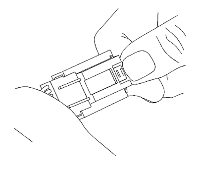
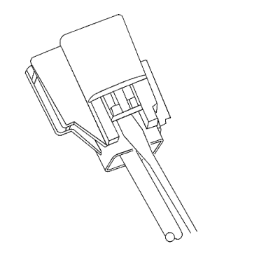
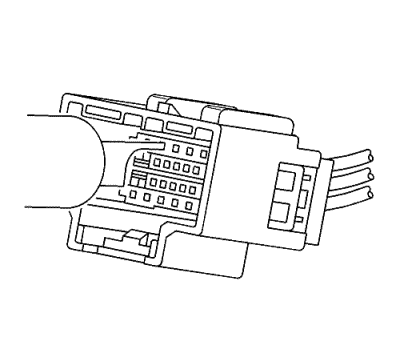
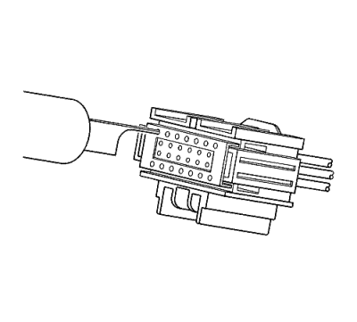

Conectores Yazaki — 16 vías
Herramientas especiales
| • | EL-38125-580 Juego de herramientas de liberación de terminales |
| • | J-38125-215 Herramienta de liberación de terminales |
Si desea informarse sobre herramientas regionales equivalentes, consultar Herramientas especiales .
Procedimiento de extracción de terminales

- Mientras presiona el bloqueo, separe las dos mitades del conector.
Nota: El seguro de posición del terminal (TPA) es frágil y puede romperse si no se realiza este proceso con cuidado.
- Utilice una herramienta pequeña de punta plana para empujar con cuidado el TPA hacia el lado del conector a ambos lados del conector.

- Vista de la mitad macho del conector con terminales hembra.

- Vista de la mitad hembra del conector con terminales macho.
- Use la herramienta J-38125-215 para soltar los terminales introduciendo la herramienta en la cavidad de liberación de terminal.

- Vista de la mitad hembra del conector con terminales macho.

- Vista de la mitad macho del conector con terminales hembra.
- Mientras mantiene en su sitio la herramienta de desmontaje, retire con cuidado el cable de la parte trasera del conector. Recuerde siempre que nunca debe utilizar la fuerza a la hora de retirar un terminal de un conector.
- Repare el terminal siguiendo el procedimiento
Reparaciones del terminal del conector : Reparación de Terminales → Reparación de cable con terminación procedimiento.
- Vuelva a insertar el terminal reparado en la cavidad. Repita el procedimiento de diagnóstico para verificar la reparación y vuelva a conectar los cuerpos de conector.
| © Copyright Chevrolet Europe. Reservados todos los derechos |